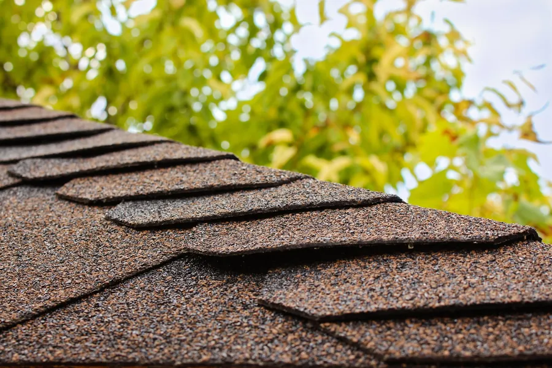

Every home is someone's castle, and we've found that homeowners' roofing needs in Salt Lake City can be quite demanding. For one thing, the roof has to look right with the rest of the house. So the challenge for our residential roofers is to make it look right and also perform the way it should, protecting what's usually your biggest investment.
As a residential roofing contractor in Salt Lake City, we help you choose high-quality materials, we make sure the deck underneath is sound before we build on it, and we make sure the ventilation meets every requirement. We also plan the work so it doesn't interrupt you or your family's routine.
Residential roofing services
| Service | When you need it |
|---|---|
| New roof installation | New builds and additions, starting from bare framing |
| Roof replacement and re-roofing | The old roof is worn out; we tear off, check the deck and install new |
| Roof repairs and leak repairs | Storm damage, missing shingles, failed flashing (see roof repair) |
| Roof maintenance | Keeping a healthy roof that way, especially before winter |
| Waterproofing | Low-slope sections, balconies and problem transitions (see waterproofing) |
| Drainage and gutter options | Water and ice building up at the eaves |
Top residential roofing materials for Salt Lake City homes
Several roofing materials work well here. These are the four we're asked about most.

Composition or asphalt shingles
By far the most common roofing material for homes in the United States. Asphalt shingles come in about a dozen colors, solid and blended, and go with almost any home design. They're generally guaranteed for 20 to 30 years and cost a lot less than the other options, which is a big reason they're so popular.
Metal panels or tiles
Metal has been standard on farm and commercial buildings for decades, and it's now the fastest-growing type of home roofing. Metal roofs last a long time and may come with a lifetime warranty. Panels go up quickly and need little upkeep. Metal tiles need a bit more care but can be made to look like wood or slate. Expect a metal roof to cost a bit more than double an asphalt roof, with far better durability.
Concrete or clay tile
You'll still find some clay tile roofs in Salt Lake City. Concrete and clay are comparable to metal in price and lifespan, though a little more expensive on average. They can mimic other materials like wood shakes or slate. They're also heavier than anything else used in Utah, so the structure has to be able to carry the weight.
Wood shakes and shingles
Wood roofs look amazing, but they're less popular now, partly because of fire safety concerns. Shakes are thick and tough and stand up well to hail. Wood shingles are thinner and take weather damage more easily. Both cost about the same as concrete, clay or metal.
Want to know how long each one really lasts here? Read how long roofs last in Utah.
Ventilation: the part of your roof you can't see
A roof that looks perfect can still fail early if the attic can't breathe. Trapped heat cooks shingles from below in summer and melts snow in winter, which leads straight to ice dams. Moisture from the house condenses on a cold deck and rots it.
That's why we check intake and exhaust venting on every job. One homeowner wrote that after we replaced and vented their roof, it was "the first winter we did not need to use a space heater in one particular room of the house." They'd used one in that room for 20 years.

We'll waterproof your residential roof
Our residential roofers also provide waterproofing that can lower your energy costs and add years to your roof. Whether you need roof repair, replacement, re-roofing, waterproofing or maintenance, we're the Salt Lake City residential roofing contractor to call for high-quality work, every time.
What install day looks like
You'll know when the crew is coming and where the materials will go. We keep the site tidy and clean up when the job is done. One client noted the crew "left the yard clean," and that one of the owners came by several times during the install to check progress and talk with the crew.
See the work for yourself in our Park City project gallery.
Residential roofing questions
Which roofing material is best for a Utah home?
Asphalt shingles are the most common and cost the least. Metal lasts longest, sheds snow well and may carry a lifetime warranty. Concrete or clay tile lasts like metal but is heavy. Wood shakes look great but are less common because of fire concerns. Your budget and house style decide it.
What's the difference between re-roofing and a new roof?
A new roof installation is for new construction or an addition, starting from bare framing. Re-roofing means replacing the covering on an existing roof. We check the deck underneath and repair or replace damaged sections, so the new roof sits on a sound base.
Why does attic ventilation matter so much?
Good ventilation keeps the roof deck cold in winter and lets heat escape in summer. That helps prevent ice dams, keeps shingles from cooking and can make rooms more comfortable. One client found a room they'd heated with a space heater for 20 years didn't need it after we vented their new roof.
Will a new roof disrupt my family's routine?
We plan the work so it doesn't get in the way of your daily routine. You'll know when the crew is coming and where materials will go, and we clean up when the job is done.
Do you do roof repairs as well as replacements?
Yes. Plenty of roofs only need a repair. We'll tell you honestly whether a repair will do the job or whether the roof is ready to be replaced. See our roof repair page for the kinds of repairs we handle.